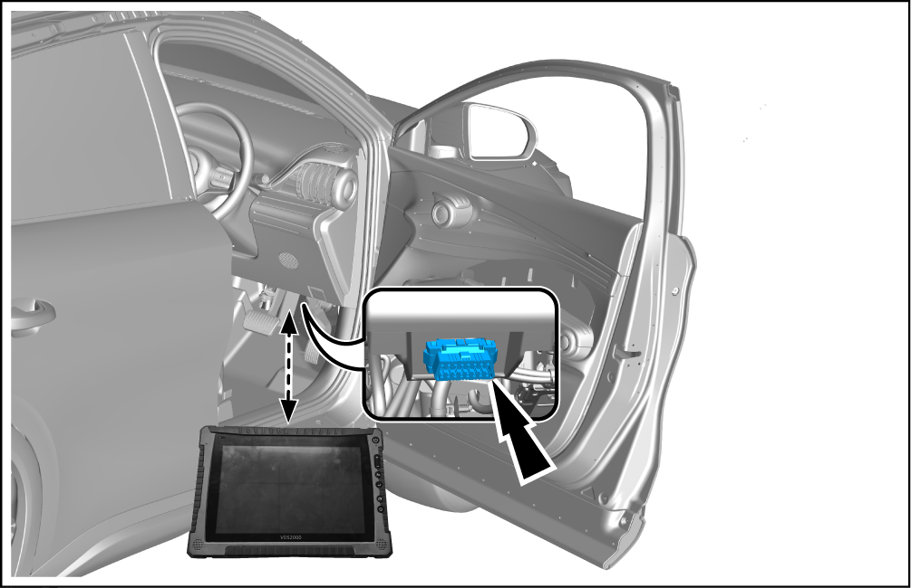
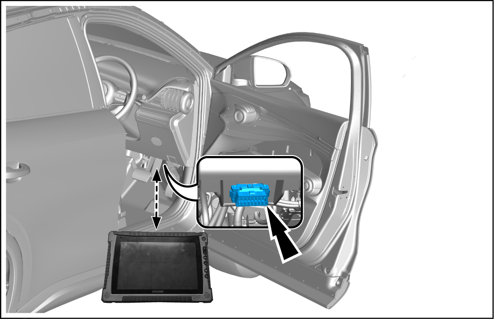

Calibration of Front Millimeter Wave Radar (Veoneer Optional)
Static Calibration

After replacing the faulty components of millimeter wave radar, configuration writing and external parameter calibration are required to the ensure the normal driving assistance. Use a VDS to the perform the calibration.
-
Site layout and tooling positioning parameters.
-
The distance from the front axle center to the radar calibration plate is D: 2042mm.
-
The distance from the center of the radar calibration plate to the ground is H: 353.5mm.
-
The level of equipment calibration plate is displayed to the middle position.
-
-
Drive the vehicle to the designated calibration site.
-
Use a VDS to connect the vehicle OBD interface. Refer to the VDS Instructions
Reminder OBD interface is located at left lower corner of left lower guard plate of instrument panel.
OBD interface is located at left lower corner of left lower guard plate of instrument panel. -
Set the vehicle power supply to OK, enter "Vehicle Diagnostic System", and select the vehicle model.
-
Select “Passenger Vehicles”.
-
Select "Corresponding Vehicle Series".
-
Select "Scan ECU".
-
After scanning, select "Front Millimeter Wave Radar - (Veoneer)".
-
Select “Action test”.
-
Select "Ground Coordinate System".
-
Write ground coordinate system data.
-
Input ground coordinate system data: 12000.
-
Tap the execute button.
-
-
Return to the main page of the module and select "Calibration".
-
Select "Static Calibration".
-
When the calibration is completed, the instrument fault light will go out automatically.
CautionIf the calibration fails, adjust the calibration equipment angle according to the VDS interface prompt and recalibrate it.